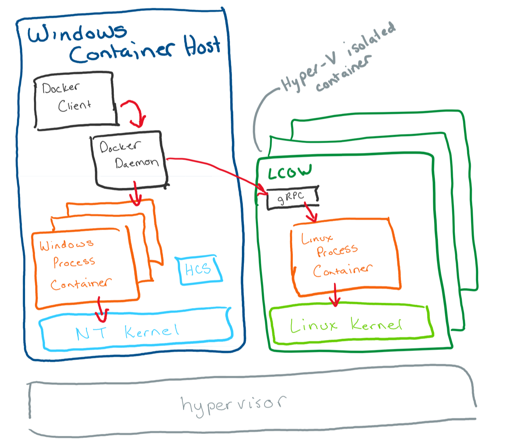
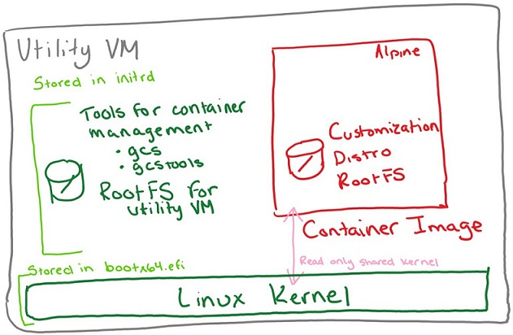

おまえは何がしたいんだ
.nuget/packages/Libuv/1.10.0/runtimes
(snip)
+-- linux-x64
| +-- native
| +-- libuv.so
+-- osx
| +-- native
| +-- libuv.dylib
(snip)
+-- win-x64
| +-- native
| +-- libuv.dll
+-- win-x86
+-- native
+-- libuv.dll
macOS は Mac 以外で動作させられるようになってから出直してきてください
Windows 上で Linux コンテナが動くの！？
docker run -it --rm `
--mount "type=bind,readonly,source=C:\home,target=/home/ichi" `
ubuntu:18.04

>dir "C:\Program Files\Linux Containers"
Directory: C:\Program Files\Linux Containers
Mode LastWriteTime Length Name
---- ------------- ------ ----
-a---- 2019/02/22 18:58 6611330 initrd.img
-a---- 2019/02/22 18:58 7660304 kernel
docker build -t foo -f foo.Dockerfile .
docker run foo --name fooContainer `
--mount "type=bind,readonly,source=c:/src,target=c:/src"
docker cp fooContainer:c:/bin bin>dir .\bin\NativeLib\ -Recurse -File | %{ Resolve-Path -Relative $_ }
.\bin\NativeLib\linux-x64\Debug\libNativeLib.so
.\bin\NativeLib\linux-x64\Release\libNativeLib.so
.\bin\NativeLib\win-x64\Debug\libNativeLib.dll
.\bin\NativeLib\win-x64\Debug\libNativeLib.ilk
.\bin\NativeLib\win-x64\Debug\libNativeLib.pdb
.\bin\NativeLib\win-x64\Release\libNativeLib.dll
.\bin\NativeLib\win-x64\Release\libNativeLib.dll.manifest
.\bin\NativeLib\win-x64\Release\libNativeLib.pdb
.\bin\NativeLib\win-x86\Debug\libNativeLib.dll
.\bin\NativeLib\win-x86\Debug\libNativeLib.ilk
.\bin\NativeLib\win-x86\Debug\libNativeLib.pdb
.\bin\NativeLib\win-x86\Release\libNativeLib.dll
.\bin\NativeLib\win-x86\Release\libNativeLib.dll.manifest
.\bin\NativeLib\win-x86\Release\libNativeLib.pdbおわり
Dockerfile
Ubuntu 18.04
FROM ubuntu:18.04
RUN apt-get update && apt-get -y install make gcc cmake ninja-buildVS2017 Build Tools Native desktop
# escape=`
# Copyright (C) Microsoft Corporation. All rights reserved.
# Licensed under the MIT license. See LICENSE.txt in the project root for license information.
ARG FROM_IMAGE=mcr.microsoft.com/dotnet/framework/runtime:4.7.2-windowsservercore-ltsc2019
FROM ${FROM_IMAGE}
# Reset the shell.
SHELL ["cmd", "/S", "/C"]
# Set up environment to collect install errors.
COPY Install.cmd C:\TEMP\
ADD https://aka.ms/vscollect.exe C:\TEMP\collect.exe
# Install Node.js LTS
ADD https://nodejs.org/dist/v8.11.3/node-v8.11.3-x64.msi C:\TEMP\node-install.msi
RUN start /wait msiexec.exe /i C:\TEMP\node-install.msi /l*vx "%TEMP%\MSI-node-install.log" /qn
ADDLOCAL=ALL
# Download channel for fixed install.
ARG CHANNEL_URL=https://aka.ms/vs/15/release/channel
ADD ${CHANNEL_URL} C:\TEMP\VisualStudio.chman
# Download and install Build Tools for Visual Studio 2017 for native desktop workload.
ADD https://aka.ms/vs/15/release/vs_buildtools.exe C:\TEMP\vs_buildtools.exe
RUN C:\TEMP\Install.cmd C:\TEMP\vs_buildtools.exe --quiet --wait --norestart --nocache `
--channelUri C:\TEMP\VisualStudio.chman `
--installChannelUri C:\TEMP\VisualStudio.chman `
--add Microsoft.VisualStudio.Workload.VCTools --includeRecommended`
--installPath C:\BuildTools
# Use developer command prompt and start PowerShell if no other command specified.
ENTRYPOINT C:\BuildTools\Common7\Tools\VsDevCmd.bat &&
CMD ["powershell.exe", "-NoLogo", "-ExecutionPolicy", "Bypass"]